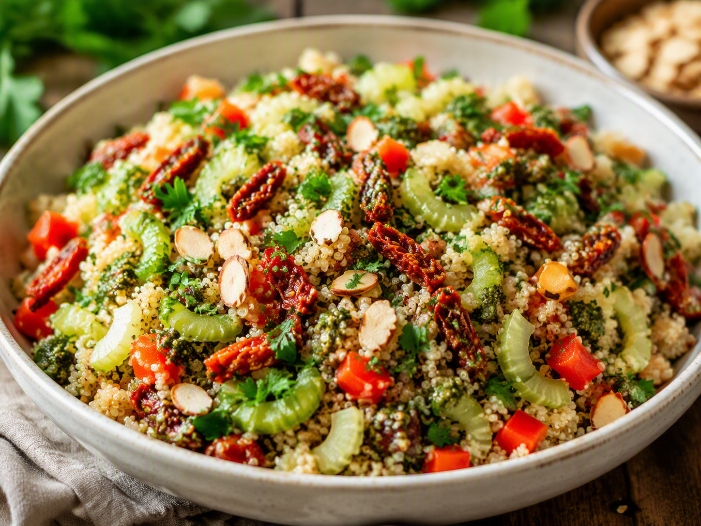

Zaterdag · Vegetarisch
Quinoasalade met pesto, paprika, bleekselderij en gedroogde tomaat
Gezonde gezinsmaaltijd voor drie personen: quinoasalade met pesto, paprika, bleekselderij en gedroogde tomaat.

Ingrediënten
- 200 g witte quinoa
- 1 zoete rode paprika, in blokjes
- 3 stengels bleekselderij, in dunne boogjes
- 100 g gedroogde tomaten, uitgelekt en fijngesneden
- 60 g groene pesto
- 1 hand platte peterselie, grof gehakt
- 30 g amandelschaafsel
- 1 el limoensap
- Peper naar smaak
Bereiding
- Spoel de quinoa en kook volgens de verpakking. Laat goed uitdampen en afkoelen tot lauwwarm.
- Rooster het amandelschaafsel droog in een koekenpan en laat afkoelen.
- Meng quinoa met paprika, bleekselderij, gedroogde tomaat, pesto en limoensap.
- Schep de peterselie erdoor en breng op smaak met peper.
- Verdeel over borden en strooi het amandelschaafsel erover.